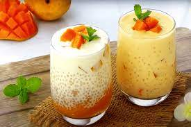
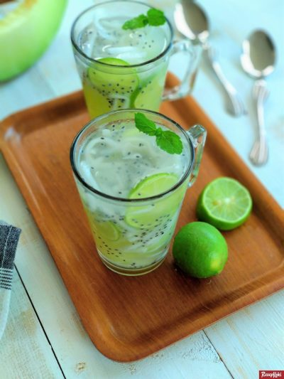

Mango Sago
Bahan-bahan
- 2 buah mangga matang
- 2 sdm cream susu
- 1 sachet nutrijel
- 250 ml susu evaporasi
- 1 sachet susu kental manis
- sagu mutiara secukupnya
Cara membuat
- Potong 1 mangga menjadi bentuk dadu kecil. Satunya lagi haluskan, campurkan cream susu, lalu blender untuk membuat Smoothie.
- Siapkan wadah atau loyang, masukan bubuk nutrijell dan tuang air panas. Aduk aduk, lalu diamkan sampai mengeras. Potong Jeli menjadi bentuk dadu kecil.
- Rebus air hingga mendidih, masukan sagu mutiara, di aduk terus sekitar 5 menit. Jika sudah, angkat, rendam dengan air dingin.
- Siapkan wadah, campurkan susu evaporasi dan susu kental manis, aduk. Jika mau simpel, bisa ganti pakai susu UHT. Dan kalau kurang manis, banyakin susu kental manisnya, atau tambahkan gula. Masukan ke lemari es supaya dingin, atau tambahkan es batu.
- Siapkan gelas, masukan smoothie, sagu mutiara dan jelly. Tuangkan susu, dan taruh potongan mangga di atasnya. Es Mango Sago siap dinikmati saat berbuka puasa.
Es Kuwut
Bahan-bahan
- Kelapa muda - 1 buah
- Melon - 250 gram
- Selasih, rendam air hangat, tiriskan - 1 sdm
- Jeruk nipis, peras airnya - 2 buah
- Air kelapa muda - 800 ml
- Gula pasir - 100 gram
- Air panas (untuk mengencerkan gula pasir) - secukupnya
Bahan Pelengkap
- Irisan jeruk nipis - secukupnya
- Es batu - secukupnya
Cara membuat
- Keruk daging kelapa muda dan melon, sisihkan.
- Campur gula dengan sedikit air panas, aduk hingga gula larut.
- Tuang gula cair pada campuran air kelapa muda.
- Beri air perasan jeruk nipis, aduk rata.
- Tambahkan daging kelapa muda, melon dan selasih, aduk rata.
- Sajikan dengan es batu dan potongan jeruk nipis.
Es Jeruk Selasih

Bahan-bahan
- Jeruk peras secukupnya
- 1/2 sdt selasih, rendam air mendidih
- 3 sdt munjung gula pasir
- Air matang secukupnya
- Es batu secukupnya
Cara membuat
- Peras jeruk, sisihkan.
- Campur air dan gula pasir sampai gula larut. Tambahkan air perasan jeruk. Cek rasa, kalau kurang manis bisa ditambahkan lagi gulanya.
- Kemudian tambahkan biji selasih dan es batu. Es jeruk selasih siap dinikmati.
Es Buah Jadul

Bahan-bahan
- 1 liter air
- 200 gr gula pasir
- 200 gr bengkuang, potong dadu
- 300 gr pepaya, potong sesuai selera
- 1 buah nanas madu, potong sesuai selera
- 1 batang kayu manis, secukupnya
- 3 butir cengkih
- 2 buah jeruk nipis, ambil airnya
- 1 lembar daun pandan, optional
Cara membuat
- Didihkan air, gula pasir, kayu manis, cengkih dan daun pandan sampai gula larut.
- Matikan api, tunggu sampai uap panasnya hilang. Aduk-aduk bila perlu, untuk mempercepat prosesnya.
- Keluarkan kayu manis, cengkih dan daun pandan, masukkan bengkuang, nanas dan pepaya.
- Kemudian masukkan air jeruk nipis, aduk rata. Diamkan di kulkas sampai meresap. Sajikan langsung atau tambah es batu.
Es Alpukat Cocopandan

Bahan-bahan
- 2 buah alpukat besar, potong dadu
- 1/2 sdm biji selasih, rendam air panas, saring
- 400 cc susu cair full cream
- 100 cc sirup cocopandan
- Es batu secukupnya
Cara membuat
- Campur semua bahan jadi satu, aduk-aduk. Cicipi, tambahkan sirup bila kurang manis.
- Siap disajikan selagi es masih dingin.
Es Kelapa Muda KW

Bahan-bahan
- 1 sachet nutrijell rasa kelapa muda
- 1 sachet susu kental manis
- 1 sachet (65 ml) santan instan
- 600 ml air
- 3 sdm gula pasir
- Sejumput garam
Cara membuat
- Campur semua bahan, masak sambil diaduk sampai mendidih. Tuang ke wadah.
- Setelah dingin, masukkan kulkas. Lalu setelah set atau mengeras kerok/parut kasar sesuai selera.
- Kemudian tambahkan air gula, selasih, perasan jeruk nipis, dan es batu. Es kelapa muda KW siap disajikan.